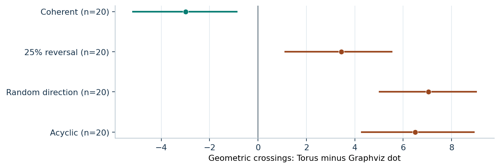
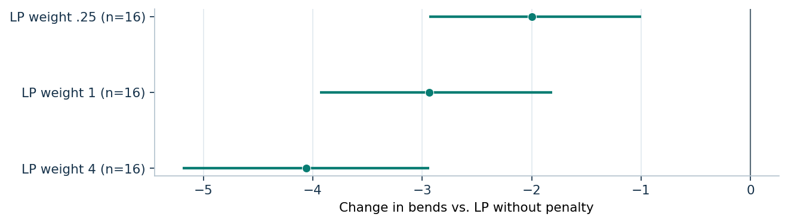
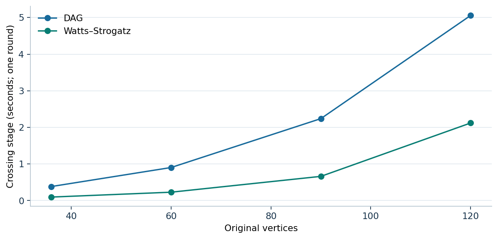

結論と追試一覧
辺の向きが円環に沿う条件で利点が再現した。 同じ骨格で向きだけを変えると、Graphviz dotに対する交差差は平均−3.00から＋7.05に変わった。実在の有向ネットワークは、再試行を含めて比較できた10条件すべてでトーラスの交差が多かった。
境界処理ではDP単独の候補を残す価値がある。 追加の28件で通過線分が2件改善した。長辺と複数巻きを含む人工ストレスでは、通過線分数を最小化すると通過元辺数が最小にならない例を2件確認した。
同じ配置情報で座標だけを変えた場合、交差数は不変だった。 独立計数と層順・巻き数による計数は144条件で一致した。汎用計測器の微差は今後の座標比較の根拠から外す。
下表の15グループを実行した。フルライセンスの接続確認も行った。参加者実験は提示・計時・記録・採点の準備と動作確認まで実施した。
| 追試 | 検証すること | 入力 | 測定行 | 完了行 | 生データ |
|---|---|---|---|---|---|
| 同一骨格で向きだけ変える | 循環性と辺の向きの揃い方を切り分ける | 80 | 160 | 160 | topology/results.csv |
| 全頂点を同じSCCに保った方向比較 | 強連結性の有無を固定して向きの効果を確かめる | 30 | 60 | 60 | scc_control/results.csv |
| 循環のある実データ | 前回の非巡回中心の公開標本を補う | 11 | 33 | 24 | public/results.csv |
| 実データの未完走例の再試行 | 求解制限と描画処理による打ち切りを調べる | 4 | 8 | 6 | public_retry/results.csv |
| 同じ時計予算での方式比較 | 比較方式の時間切れに伴う選択偏りを確認する | 12 | 48 | 42 | budget/results.csv |
| 層割当と実行可能初期解 | 固定した巻き辺数の下で目的関数と初期解を比較する | 16 | 192 | 190 | ranks/results.csv |
| 巻き数を含む小規模厳密照合 | 前回の巻き数固定の照合を拡張する | 20 | 80 | 80 | winding/results.csv |
| siftingの別初期順と探索予算 | 追加試行による改善と計算量を比較する | 16 | 144 | 144 | sifting/results.csv |
| 切れ目候補選択の再検証 | ガードと元辺本数優先を新規入力で検証する | 28 | 236 | 236 | seams/results.csv |
| 長辺・複数巻きの切れ目全列挙 | 元辺本数と線分本数の目的が異なる入力を調べる | 36 | 72 | 72 | seam_stress/results.csv |
| 座標の周期・曲がり重み・平滑化 | 辺長と曲がりの効果を同一埋め込みで分離する | 16 | 400 | 400 | coordinates/results.csv |
| LPの交差数の照合 | 描画計測器とリフト上の独立計数を比較する | 16 | 176 | 176 | coordinate_audit/results.csv |
| 二次・線形分配の規模限界 | ライセンス制限と処理規模を分離する | 8 | 36 | 32 | scaling/results.csv |
| 長い辺が多い場合の挿入時間 | ダミー頂点増大時に索引化の効果が残るかを測る | 3 | 6 | 6 | subdivision/results.csv |
| 境界の移動に対する交差計数 | 周期境界の位置と巻き数を変えて不変性を試す | 36 | 108 | 108 | geometry/results.csv |
生データ・入力・設定を開く
- 同一骨格で向きだけ変える — CSV · 入力 · 詳細 · 設定
- 全頂点を同じSCCに保った方向比較 — CSV · 入力 · 詳細 · 設定
- 循環のある実データ — CSV · 入力 · 詳細 · 設定
- 実データの未完走例の再試行 — CSV · 入力 · 詳細 · 設定
- 同じ時計予算での方式比較 — CSV · 入力 · 詳細 · 設定
- 層割当と実行可能初期解 — CSV · 入力 · 詳細 · 設定
- 巻き数を含む小規模厳密照合 — CSV · 入力 · 詳細 · 設定
- siftingの別初期順と探索予算 — CSV · 入力 · 詳細 · 設定
- 切れ目候補選択の再検証 — CSV · 入力 · 詳細 · 設定
- 長辺・複数巻きの切れ目全列挙 — CSV · 入力 · 詳細 · 設定
- 座標の周期・曲がり重み・平滑化 — CSV · 入力 · 詳細 · 設定
- LPの交差数の照合 — CSV · 入力 · 詳細 · 設定
- 二次・線形分配の規模限界 — CSV · 入力 · 詳細 · 設定
- 長い辺が多い場合の挿入時間 — CSV · 入力 · 詳細 · 設定
- 境界の移動に対する交差計数 — CSV · 入力 · 詳細 · 設定
1. 循環方向が揃うときの効果
同じ無向Watts–Strogatz骨格を、12・16頂点、再配線率0.10・0.35、各5 seedで生成した。骨格ごとに4種の有向化を行い、ラベルと辺集合を固定した。トーラスとdotは80条件とも完走した。各辺を確率0.25で反転する条件とランダム条件には共通乱数を使った。

| 差の定義（左 − 右） | 対応数 | 平均差 | 中央値 | 平均差 95%区間 | 減 / 同 / 増 |
|---|---|---|---|---|---|
| 円環に沿う | 20 | -3 | -2.00 | [-5.20, -0.85] | 14 / 2 / 4 |
| 各辺を確率0.25で反転 | 20 | 3.45 | 3.00 | [1.10, 5.55] | 5 / 0 / 15 |
| ランダムな向き | 20 | 7.05 | 6.00 | [5, 9.05] | 0 / 2 / 18 |
| ランダム順序に沿うDAG | 20 | 6.50 | 5.50 | [4.25, 8.95] | 1 / 1 / 18 |
| 差の定義（左 − 右） | 対応数 | 平均差 | 中央値 | 平均差 95%区間 | 減 / 同 / 増 |
|---|---|---|---|---|---|
| 各辺を確率0.25で反転 − 円環に沿う | 20 | 6.45 | 5.50 | [3.60, 8.95] | 1 / 1 / 18 |
| ランダムな向き − 円環に沿う | 20 | 10.05 | 8.50 | [6.75, 13.60] | 0 / 0 / 20 |
| ランダム順序に沿うDAG − 円環に沿う | 20 | 9.50 | 8.50 | [6.40, 12.60] | 1 / 1 / 18 |
円環沿いでは20件中14件で交差が減り、ランダム方向では18件で増えた。元の階層方向と整合するような辺の向きが特に重要だと解釈できる。
全頂点を一つのSCCに固定
12・16頂点の有向閉路に同じ追加辺を入れ、追加辺の向きだけを変えた。強連結性を30条件すべてで保った。
| 差の定義（左 − 右） | 対応数 | 平均差 | 中央値 | 平均差 95%区間 | 減 / 同 / 増 |
|---|---|---|---|---|---|
| 追加辺も円環沿い | 10 | -2.50 | -1.00 | [-4.30, -1.10] | 9 / 1 / 0 |
| 追加辺をランダムに反転 | 10 | 5.40 | 2.50 | [1.80, 9.80] | 0 / 2 / 8 |
| 追加辺をすべて逆向き | 10 | 5.60 | 3.50 | [0.90, 11.40] | 1 / 1 / 8 |
各条件10件で、平均差は円環沿い−2.50、ランダムに反転＋5.40、すべて逆向き＋5.60。今回の方向効果を「SCCがない図との違い」だけでは説明できない。フィードバック辺数・次数は向きとともに変わり得る。
2. 公開の実在有向データと未完走の確認
Sampsonの3時点と、UKfaculty・macaqueの最大SCCを起点にした誘導部分グラフ各4件。後者は弱連結BFSの先頭14頂点を使い、元の向きを維持した。Sampsonの時点間や誘導部分グラフ間には重複がある。求解または描画で止まった4例を、モデルごと3秒・方式ごと25秒で再試行した。
| 入力 | 頂点 | 辺 | 最大SCCの割合 | 既定の初回 | 既定の再試行 | トーラス交差 | dot交差 | 交差差 | 線形・1回掃引の交差 |
|---|---|---|---|---|---|---|---|---|---|
| sampson-time-1 | 18 | 55 | 1.00 | 完了 | — | 109 | 23 | 86 | — |
| sampson-time-2 | 18 | 57 | 1.00 | 完了 | — | 159 | 40 | 119 | — |
| sampson-time-3 | 18 | 56 | 0.94 | 完了 | — | 126 | 27 | 99 | — |
| UKfaculty-induced-0 | 14 | 99 | 0.93 | 実行エラー | 実行エラー | — | 320 | — | — |
| UKfaculty-induced-1 | 14 | 98 | 1.00 | wall_timeout | 完了 | 733 | 304 | 429 | 820 |
| UKfaculty-induced-2 | 14 | 51 | 0.79 | 完了 | — | 138 | 47 | 91 | — |
| UKfaculty-induced-3 | 14 | 71 | 1.00 | 完了 | — | 350 | 130 | 220 | — |
| macaque-induced-0 | 14 | 119 | 1.00 | 実行エラー | 完了 | 1,442 | 489 | 953 | 1,225 |
| macaque-induced-1 | 14 | 99 | 1.00 | 完了 | — | 909 | 234 | 675 | — |
| macaque-induced-2 | 14 | 119 | 1.00 | wall_timeout | 完了 | 1,405 | 510 | 895 | 1,321 |
| macaque-induced-3 | 14 | 77 | 0.79 | 完了 | — | 403 | 125 | 278 | — |
既定のトーラスでは3例を追加で回収し、比較できた10例すべてで交差が増えた。平均差は＋384.50で、密な部分グラフが差を押し上げている。残る1例はモデルごと8秒・方式ごと55秒まで伸ばしても、層割当中に実行可能解がないまま終わった。現実の循環があるだけで、円環沿いの人工グラフと同じ利点が得られるとは考えにくい。8秒での再試行
出典と取得形式は、各入力のマニフェストに記録した。Sampson · UKfacultyとmacaque
3. 比較方式の時計予算と選択偏り
前回から族ごとに時間切れを最大2例、その他を1例選んで12入力を再試行した。独立の再試行で計測した方式単位の壁時計時間を用い、仮に6・14・24秒で打ち切る場合の完了数を数えた。6秒と14秒で個別にアルゴリズムを中断して再スタートした結果ではない。
| 方式 | 試行 | 6秒 | 14秒 | 24秒 | 以前に時間切れがあった入力で完了 | 同対象数 |
|---|---|---|---|---|---|---|
| トーラス | 12 | 12 | 12 | 12 | 8 | 8 |
| Graphviz dot | 12 | 12 | 12 | 12 | 8 | 8 |
| 平面杉山 | 12 | 11 | 12 | 12 | 8 | 8 |
| 放射型 | 12 | 4 | 5 | 6 | 2 | 8 |
平面杉山法は今回14秒で12/12件、放射型は24秒でも6/12件だった。前回の平面法の一部の欠測が実行制限・負荷に敏感だったことが分かる。放射型の品質比較には依然として欠測偏りがある。新旧の実行時間は単純に同一条件とみなせない。
4. 層割当の初期解と目的関数
16入力について、層数と左右通過元辺数を固定し、実行可能な割当を二次目的のMIP startとして渡す条件を比較した。WorkLimitは壁時計秒と異なるGurobiの作業量。初期解の準備費用は別行に記録した。線形総和・二乗和・最大2層増の条件では、後段も測定した。
| 条件 | 試行 | 実行可能解あり | 最適終了 |
|---|---|---|---|
| cold_0.03 | 16 | 14 | 13 |
| warm_0.03 | 16 | 16 | 13 |
| cold_0.25 | 16 | 16 | 15 |
| warm_0.25 | 16 | 16 | 16 |
| 差の定義（左 − 右） | 対応数 | 平均差 | 中央値 | 平均差 95%区間 | 減 / 同 / 増 |
|---|---|---|---|---|---|
| 二乗和 − 線形／スパン二乗和 | 16 | -5.19 | 0.00 | [-10.75, -0.88] | 5 / 11 / 0 |
| 二乗和 − 線形／完成図交差 | 16 | 0.88 | 0.00 | [-1.19, 3.25] | 1 / 11 / 4 |
| 最大2層追加 − 既定／完成図交差 | 16 | -0.88 | 0.00 | [-4.31, 1.50] | 2 / 12 / 2 |
低予算では初期解なしの14/16件に対し、ありは16/16件で解を返した。最適終了は双方13件。より高い予算では最適終了が15件から16件になった。同じ層数で二乗和は狙った指標を改善したが、完成図の交差は平均＋0.88だった。層数を増やす場合も完成図への効果には両方向があった。
5. 巻き数の厳密照合と探索のやり直し
3層・各層2または3頂点の20例で、全順序と巻き数の組合せを列挙した。各層間に共通の整数を加減しても交差が変わらない性質を使い、自由siftingの解が各層間で−1〜＋1に収まるかも確認した。該当は20/20件。別の16件では前段を固定し、siftingの反復、巻き数固定と自由、初期順を変えた複数開始を比較した。
| 差の定義（左 − 右） | 対応数 | 平均差 | 中央値 | 平均差 95%区間 | 減 / 同 / 増 |
|---|---|---|---|---|---|
| 任意巻き±1の最適値 − 巻き数0の最適値 | 20 | -0.50 | 0.00 | [-0.75, -0.25] | 9 / 11 / 0 |
| 自由sifting − 任意巻き±1の厳密値 | 20 | 0 | 0.00 | [0, 0] | 0 / 20 / 0 |
| 差の定義（左 − 右） | 対応数 | 平均差 | 中央値 | 平均差 95%区間 | 減 / 同 / 増 |
|---|---|---|---|---|---|
| 1回 − 既定／交差 | 16 | 0.44 | 0.00 | [0, 1.31] | 0 / 15 / 1 |
| 固定と自由の良い方 − 既定／交差 | 16 | -0.31 | 0.00 | [-0.94, 0] | 1 / 15 / 0 |
| 4開始の最良 − 既定／交差 | 16 | -0.62 | 0.00 | [-1.12, -0.19] | 5 / 11 / 0 |
| 4開始の総時間 − 既定 (s) | 16 | 0.33 | 0.38 | [0.25, 0.41] | 0 / 0 / 16 |
巻き数の自由化で小規模の厳密値が20例中9例で改善した。自由siftingは20例すべてで制限付きの厳密値と一致したが、19例で厳密値が0の小さな問題である。別の16例では1回の交差が既定と同数だったのは15例。4開始は5例で改善したが計算時間も増えた。複数開始を常時使う効果は小さい。
6. 境界を通る線分と元の辺
前回に見つけた「UNWINDなしのDPを追加候補に残す」方法を新規28例で検証。候補間の同点処理では線分数、元辺数、通過イベント数を順に比較した。人工ストレスでは固定した層構造に長辺を多く入れ、巻き数を−2〜＋2にして切れ目を全列挙した。
| 差の定義（左 − 右） | 対応数 | 平均差 | 中央値 | 平均差 95%区間 | 減 / 同 / 増 |
|---|---|---|---|---|---|
| 候補追加 − 既定／上下通過線分 | 28 | -0.39 | 0.00 | [-1.07, 0] | 2 / 26 / 0 |
| 候補追加 − 既定／上下通過元辺 | 28 | -0.39 | 0.00 | [-1.07, 0] | 2 / 26 / 0 |
| 候補追加 − 既定／完成図交差 | 28 | 0 | 0.00 | [0, 0] | 0 / 28 / 0 |
| 元辺優先 − 線分優先／上下通過元辺 | 28 | 0 | 0.00 | [0, 0] | 0 / 28 / 0 |
| ケース | 最少線分数 | そのときの最少元辺数 | 最少元辺数 | そのときの最少線分数 |
|---|---|---|---|---|
| stress-11 | 11 | 7 | 6 | 12 |
| stress-13 | 11 | 7 | 6 | 13 |
候補追加は2/28件で通過線分を減らし、幾何交差は全件同数だった。候補内の優先順位変更では差が出なかった。人工例では36件中2件で目的が食い違った。DPと線分最少値は36/36件で一致した。元辺の通過本数を最小化したい場合は別の目的関数が必要である。
7. 座標割当と交差カウントの再監査
16入力に対し、同じ階層・層順・巻き数から座標だけを変えた。周期を最小設定の1・1.25・1.6倍とし、BKの平滑化とLPの曲がり罰則の重みを振った。3×3 BKは、その周期に合わせた既定BKとも比較した。

| 方式 | 対応入力 | 周期倍率 | 曲がり | 総辺長 | 割当秒 |
|---|---|---|---|---|---|
| bk_k0_p1 | 16 | 1.00 | 16.69 | 88.25 | 0.00 |
| bk_k4_p1 | 16 | 1.00 | 21.81 | 82.23 | 0.00 |
| bk_k10_p1 | 16 | 1.00 | 20 | 82.02 | 0.00 |
| lp_w0_p1 | 16 | 1.00 | 12.94 | 82.37 | 0.01 |
| lp_w025_p1 | 16 | 1.00 | 10.94 | 81.52 | 0.01 |
| lp_w1_p1 | 16 | 1.00 | 10 | 81.78 | 0.01 |
| lp_w4_p1 | 16 | 1.00 | 8.88 | 82.99 | 0.01 |
| lp_w1_p1.25 | 16 | 1.25 | 8.25 | 88.38 | 0.01 |
| lp_w1_p1.6 | 16 | 1.60 | 7.31 | 98.42 | 0.01 |
| replica_3x3 | 16 | 1.74 | 15.75 | 119.34 | 0.02 |
| matched_period_bk | 16 | 1.74 | 24.44 | 104.89 | 0.00 |
| 差の定義（左 − 右） | 対応数 | 平均差 | 中央値 | 平均差 95%区間 | 減 / 同 / 増 |
|---|---|---|---|---|---|
| 重み1 − BK／曲がり | 16 | -11.81 | -12.00 | [-13.62, -9.88] | 16 / 0 / 0 |
| 重み4 − 重み1／総辺長 | 16 | 1.21 | 0.85 | [0.60, 1.83] | 2 / 2 / 12 |
| 周期1.6倍 − 最小周期／総辺長 | 16 | 16.64 | 11.53 | [11.11, 25.33] | 0 / 0 / 16 |
| 3×3 − 同周期BK／曲がり | 16 | -8.69 | -9.00 | [-11.19, -6.06] | 15 / 0 / 1 |
| 3×3 − 同周期BK／総辺長 | 16 | 14.45 | 10.83 | [9.23, 21.21] | 0 / 0 / 16 |
最小周期で重み1のLPは既定BKの曲がりを16件すべてで減らした。総辺長は16件中8件で短縮、8件で増加。重み4で曲がりがさらに減る一方、重み1より総辺長が平均1.21増えた。3×3は同周期で曲がりを平均8.69減らしたが、総辺長は全件増えた。
交差数の監査
同じ埋め込みの144条件で、層間帯をリフトして交点を独立に数えた。層順・巻き数の計数とは144/144件で一致した。全方式共通の線分クリッピング計測器だけが9件でずれた。ずれはLP系に限られた。座標方式間で交差が微増減したように見える値は効果と解釈しない。上の評価は辺長・曲がりに基づく。
| 入力 | 方式 | 独立計数 | 汎用計測器 |
|---|---|---|---|
| dag-12-2-401 | lp_p1 | 19 | 18 |
| dag-12-2-401 | lp_bend_p1 | 19 | 18 |
| dag-12-2-402 | lp_p1 | 7 | 6 |
| dag-16-2-401 | lp_p1 | 25 | 27 |
| random-16-2-401 | lp_p1 | 14 | 13 |
| random-16-2-401 | lp_bend_p1 | 14 | 13 |
| random-16-2-402 | lp_p1 | 19 | 18 |
| random-16-2-402 | lp_bend_p1 | 19 | 18 |
| scc_chain-16-2-401 | lp_bend_p1 | 29 | 30 |
8. 規模とライセンスの影響
36・60・90・120頂点で、DAGとWatts–Strogatzの両方を試した。左右通過元辺数の探索は共通にし、層割当の二乗和と線形総和を切り替えた。後段の交差削減は1回の条件で完了できるかを別計測した。計測の家族・規模ごとの反復は1。

| 族 | 頂点 | 階層変数 | 二次求解 | エラー番号 | 線形求解 | 交差削減秒 | 上流の制限付き解 |
|---|---|---|---|---|---|---|---|
| DAG | 36 | 108 | 完了 | — | 完了 | 0.38 | なし |
| DAG | 60 | 180 | 完了 | — | 完了 | 0.90 | なし |
| DAG | 90 | 270 | 実行エラー | 10,010 | 完了 | 2.24 | あり |
| DAG | 120 | 360 | 実行エラー | 10,010 | 完了 | 5.06 | あり |
| Watts–Strogatz | 36 | 108 | 完了 | — | 完了 | 0.10 | なし |
| Watts–Strogatz | 60 | 180 | 完了 | — | 完了 | 0.23 | なし |
| Watts–Strogatz | 90 | 270 | 実行エラー | 10,010 | 完了 | 0.66 | なし |
| Watts–Strogatz | 120 | 360 | 実行エラー | 10,010 | 完了 | 2.12 | なし |
二次は90・120頂点の4入力すべてで制限エラー10010。線形は8/8件で層割当から1回掃引と座標生成まで完了し、120頂点も通った。時間制限付きの上流結果を含む。WLSで201変数の二次問題を再試行した結果は name_resolution（10,022）。ネットワークアクセスを許可した確認でも同じ状態だった。そのためフルライセンスでの既定法の限界や120頂点での通常の5回掃引はここでは確定していない。再確認の記録
9. ダミー挿入と周期境界の性質
長辺を多くして、50・200・800頂点で旧版と索引化版を各9回ずつ、順番を交互にして計測した。別に人工の周期グラフ36例で−2〜＋2巻きの線分を作り、層ごとの切れ目の回転と全層一括移動を施した。
| 頂点 | 層 | ダミー数 | 線分数 | 旧 (ms) | 索引あり (ms) | 旧／索引 |
|---|---|---|---|---|---|---|
| 50 | 15 | 1,418 | 1,568 | 1.62 | 1.54 | 1.05 |
| 200 | 35 | 14,554 | 15,154 | 19.56 | 11.99 | 1.63 |
| 800 | 80 | 140,426 | 142,826 | 156.23 | 99.07 | 1.58 |
| 条件 | 入力 | 元の幾何交差と一致 | 層順の計数と一致 |
|---|---|---|---|
| original | 36 | 36 | 36 |
| layer_cut_rotation | 36 | 36 | 36 |
| global_seam_translation | 36 | 36 | 36 |
ダミー挿入は全反復で出力が完全に一致し、800頂点では中央値が約1.58倍高速だった。幾何交差は人工36例の両変換で保存した。座標が数値的な境界近傍にある場合は、第7節の独立計数を優先する。
10. 読み取りの参加者実験
前回作成した24問×3条件を、実際に提示・計時できるオフライン画面にした。匿名IDと担当者の割り当てたフォーム番号を入力し、画像表示後の回答と画面切替の有無をCSVに記録する。採点器は中断した参加者を除く設定を追加し、既知の確認用回答で検証した。
参加者の回答CSVは入手できていない。したがって、人が境界をまたぐ辺や経路をどれだけ早く正確に読めるかの実測値はない。